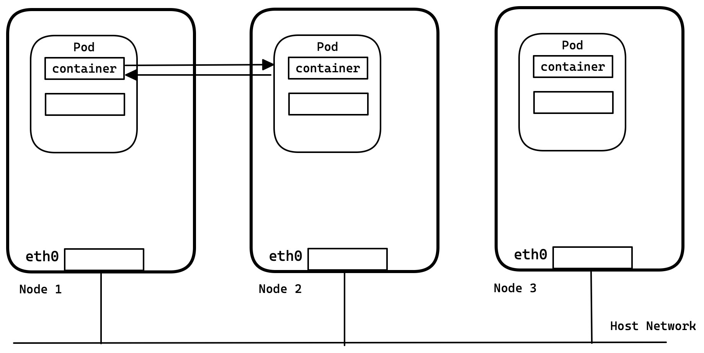
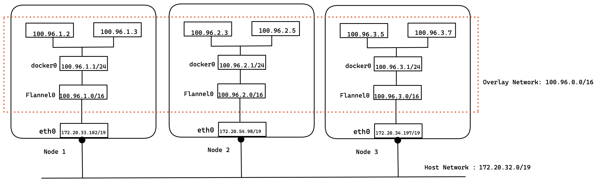
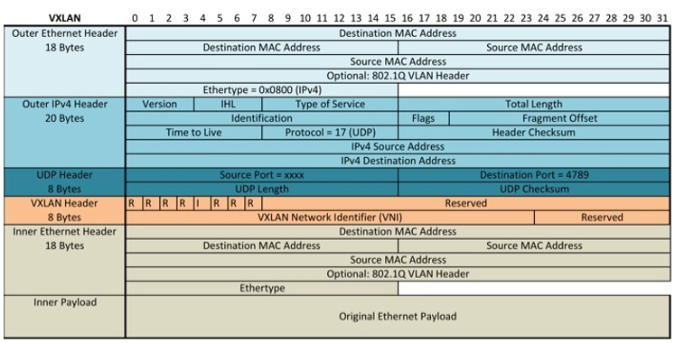

kubenetes networking

Networking details
-
Platforms like Kubernetes assume that each container (pod) has a unique, routable IP inside the cluster. The advantage of this model is that it removes the port mapping complexities that come from sharing a single host IP.
-
Flannel is responsible for providing a layer 3 IPv4 network between multiple nodes in a cluster. Flannel does not control how containers are networked to the host, only how the traffic is transported between hosts. However, flannel does provide a CNI plugin for Kubernetes and a guidance on integrating with Docker. Flannel is focused on networking
-
Flannel is a network overlay for Kubernetes. It provides a way for pods to communicate with each other even if they are not on the same host. Flannel is a simple and lightweight network overlay that is easy to install and configure.
-
Flannel works by creating a virtual network on top of the physical network. This virtual network is made up of tunnels that connect the pods. The tunnels are created using the VXLAN protocol.
-
When a pod sends a packet to another pod, the packet is encapsulated in a VXLAN header and sent to the tunnel that connects the two pods. The tunnel then decapsulates the packet and sends it to the destination pod.
-
Flannel is a layer 3 network, which means that it supports routing between pods. This is in contrast to some other network overlays, such as Docker Swarm, which are layer 2 networks.
-
Flannel does not control how containers are networked to the host. This is the responsibility of the host’s operating system. Flannel only controls how traffic is transported between hosts.
-
Flannel provides a CNI plugin for Kubernetes. This plugin makes it easy to install and configure Flannel with Kubernetes. Flannel also provides guidance on integrating with Docker.
Here are some of the benefits of using Flannel:
- It is a simple and lightweight network overlay.
- It is easy to install and configure.
- It does not require any additional infrastructure.
- It is a good choice for small and medium-sized Kubernetes clusters.
- It supports routing between pods.
- It is compatible with Kubernetes and Docker.
Flannel Overlay Network
To achieve kubernetes’ network requirements, flannel’s idea is simple: create another flat network which runs above the host network, this is the so-called overlay network. All containers(Pod) will be assigned one ip address in this overlay network, they communicate with each other by calling each other’s ip address directly.

minikube start
~ minikube start
😄 minikube v1.30.1 on Darwin 13.3.1 (arm64)
✨ Using the docker driver based on existing profile
👍 Starting control plane node minikube in cluster minikube
🚜 Pulling base image ...
🔄 Restarting existing docker container for "minikube" ...
❗ Image was not built for the current minikube version. To resolve this you can delete and recreate your minikube cluster using the latest images. Expected minikube version: v1.29.0 -> Actual minikube version: v1.30.1
🐳 Preparing Kubernetes v1.26.3 on Docker 23.0.2 ...
🔗 Configuring bridge CNI (Container Networking Interface) ...
🔎 Verifying Kubernetes components...
▪ Using image gcr.io/k8s-minikube/storage-provisioner:v5
💡 After the addon is enabled, please run "minikube tunnel" and your ingress resources would be available at "127.0.0.1"
▪ Using image registry.k8s.io/ingress-nginx/controller:v1.7.0
▪ Using image registry.k8s.io/ingress-nginx/kube-webhook-certgen:v20230312-helm-chart-4.5.2-28-g66a760794
▪ Using image registry.k8s.io/ingress-nginx/kube-webhook-certgen:v20230312-helm-chart-4.5.2-28-g66a760794
🔎 Verifying ingress addon...
🌟 Enabled addons: storage-provisioner, default-storageclass, ingress
🏄 Done! kubectl is now configured to use "minikube" cluster and "default" namespace by default
Install Flannel on Minikube
~ kubectl apply -f https://github.com/flannel-io/flannel/releases/latest/download/kube-flannel.yml
namespace/kube-flannel created
serviceaccount/flannel created
clusterrole.rbac.authorization.k8s.io/flannel created
clusterrolebinding.rbac.authorization.k8s.io/flannel created
configmap/kube-flannel-cfg created
daemonset.apps/kube-flannel-ds created
Minikube provide option to select CNI Plugins
--cni='':
CNI plug-in to use. Valid options: auto, bridge, calico, cilium, flannel, kindnet, or path
to a CNI manifest (default: auto)
- while starting minikube define cni flag
minikube start --cni=flannel
😄 minikube v1.30.1 on Darwin 13.3.1 (arm64)
✨ Automatically selected the docker driver. Other choices: qemu2, virtualbox, ssh
📌 Using Docker Desktop driver with root privileges
👍 Starting control plane node minikube in cluster minikube
🚜 Pulling base image ...
> gcr.io/k8s-minikube/kicbase...: 336.39 MiB / 336.39 MiB 100.00% 4.83 Mi
🔥 Creating docker container (CPUs=4, Memory=8192MB) ...
🐳 Preparing Kubernetes v1.26.3 on Docker 23.0.2 ...
▪ Generating certificates and keys ...
▪ Booting up control plane ...
▪ Configuring RBAC rules ...
🔗 Configuring Flannel (Container Networking Interface) ...
▪ Using image gcr.io/k8s-minikube/storage-provisioner:v5
🔎 Verifying Kubernetes components...
🌟 Enabled addons: storage-provisioner, default-storageclass
🏄 Done! kubectl is now configured to use "minikube" cluster and "default" namespace by default
add another working node
➜ sangam14.github.io git:(main) ✗ minikube node add
😄 Adding node m02 to cluster minikube
❗ Cluster was created without any CNI, adding a node to it might cause broken networking.
👍 Starting worker node minikube-m02 in cluster minikube
🚜 Pulling base image ...
🔥 Creating docker container (CPUs=4, Memory=8192MB) ...
🐳 Preparing Kubernetes v1.26.3 on Docker 23.0.2 ...
🔎 Verifying Kubernetes components...
🏄 Successfully added m02 to minikube!
Minikube Node list
~ minikube node list
minikube 192.168.49.2
minikube-m02 192.168.49.3
Minikube create namespace kube-flannel
kubectl get pods -n kube-flannel
NAME READY STATUS RESTARTS AGE
kube-flannel-ds-48tbz 1/1 Running 0 21m
kube-flannel-ds-ltg88 1/1 Running 0 8m52s
create 2 busybox pod
kubectl create -f busybox1.yaml
kubectl create -f busybox2.yaml
get pods
flannel git:(main) ✗ kubectl get pods
NAME READY STATUS RESTARTS AGE
busybox1 1/1 Running 0 31s
busybox2 1/1 Running 0 45s
get more details around this pods
kubectl get pods -o wide
The subnet of eth0 should match the CNI subnet
flannel git:(main) ✗ kubectl exec --stdin --tty busybox1 -- ifconfig
eth0 Link encap:Ethernet HWaddr 52:3B:44:60:37:EB
inet addr:10.244.1.3 Bcast:10.244.1.255 Mask:255.255.255.0
UP BROADCAST RUNNING MULTICAST MTU:65485 Metric:1
RX packets:0 errors:0 dropped:0 overruns:0 frame:0
TX packets:1 errors:0 dropped:0 overruns:0 carrier:0
collisions:0 txqueuelen:0
RX bytes:0 (0.0 B) TX bytes:42 (42.0 B)
lo Link encap:Local Loopback
inet addr:127.0.0.1 Mask:255.0.0.0
UP LOOPBACK RUNNING MTU:65536 Metric:1
RX packets:0 errors:0 dropped:0 overruns:0 frame:0
TX packets:0 errors:0 dropped:0 overruns:0 carrier:0
collisions:0 txqueuelen:1000
RX bytes:0 (0.0 B) TX bytes:0 (0.0 B)
➜ flannel git:(main) ✗ kubectl exec --stdin --tty busybox2 -- ifconfig
eth0 Link encap:Ethernet HWaddr 5E:FA:9B:2F:A1:69
inet addr:10.244.1.2 Bcast:10.244.1.255 Mask:255.255.255.0
UP BROADCAST RUNNING MULTICAST MTU:65485 Metric:1
RX packets:0 errors:0 dropped:0 overruns:0 frame:0
TX packets:1 errors:0 dropped:0 overruns:0 carrier:0
collisions:0 txqueuelen:0
RX bytes:0 (0.0 B) TX bytes:42 (42.0 B)
lo Link encap:Local Loopback
inet addr:127.0.0.1 Mask:255.0.0.0
UP LOOPBACK RUNNING MTU:65536 Metric:1
RX packets:0 errors:0 dropped:0 overruns:0 frame:0
TX packets:0 errors:0 dropped:0 overruns:0 carrier:0
collisions:0 txqueuelen:1000
RX bytes:0 (0.0 B) TX bytes:0 (0.0 B)
We should be able to ping between PoDs.
flannel git:(main) ✗ kubectl exec --stdin --tty busybox1 -- ping 10.244.1.2
PING 10.244.1.2 (10.244.1.2): 56 data bytes
64 bytes from 10.244.1.2: seq=0 ttl=64 time=0.326 ms
64 bytes from 10.244.1.2: seq=1 ttl=64 time=0.086 ms
64 bytes from 10.244.1.2: seq=2 ttl=64 time=0.097 ms
64 bytes from 10.244.1.2: seq=3 ttl=64 time=0.106 ms
64 bytes from 10.244.1.2: seq=4 ttl=64 time=0.103 ms
64 bytes from 10.244.1.2: seq=5 ttl=64 time=0.071 ms
^C
PoDs in the host network of a node can communicate with all pods on all nodes without NAT
➜ flannel git:(main) ✗ kubectl create -f busybox3.yaml
pod/busybox3 created
➜ flannel git:(main) ✗ kubectl get pods -o wide
NAME READY STATUS RESTARTS AGE IP NODE NOMINATED NODE READINESS GATES
busybox1 1/1 Running 5 (11m ago) 23h 10.244.1.3 minikube-m02 <none> <none>
busybox2 1/1 Running 5 (12m ago) 23h 10.244.1.2 minikube-m02 <none> <none>
busybox3 1/1 Running 0 20s 10.244.0.3 minikube <none> <none>
Now starting a ping from this new PoD busybox 3 (in minikube node ) to busybox1 (in minikube-m02 ).
flannel git:(main) ✗ kubectl exec --stdin --tty busybox3 -- ping 10.244.1.3
PING 10.244.1.3 (10.244.1.3): 56 data bytes
64 bytes from 10.244.1.3: seq=0 ttl=62 time=0.703 ms
64 bytes from 10.244.1.3: seq=1 ttl=62 time=0.198 ms
64 bytes from 10.244.1.3: seq=2 ttl=62 time=0.169 ms
64 bytes from 10.244.1.3: seq=3 ttl=62 time=0.159 ms
64 bytes from 10.244.1.3: seq=4 ttl=62 time=0.160 ms
64 bytes from 10.244.1.3: seq=5 ttl=62 time=0.125 ms
64 bytes from 10.244.1.3: seq=6 ttl=62 time=0.156 ms
64 bytes from 10.244.1.3: seq=7 ttl=62 time=0.179 ms
^C
This works as expected. This is possible due to VxLAN implementation in flannel. The VxLAN header is 8 bytes long and has the following format:
24-bit VNID (Virtual Network Identifier): This field identifies the VxLAN network that the packet belongs to. 8-bit Flags: This field contains a few flags that control how the packet is processed. 24-bit Reserved: This field is reserved for future use. 20-byte Outer IP Header: This field contains the IP header of the encapsulated packet. The VxLAN header is encapsulated in a UDP packet, which is then sent over the L3 routed infrastructure. The destination UDP port for VxLAN packets is 4789.
When a VxLAN packet arrives at a VTEP, the VTEP decapsulates the packet and forwards the encapsulated packet to the destination host.
VxLAN is a popular network virtualization technology that is used to create overlay networks over L3 routed infrastructures. VxLAN is a good choice for network virtualization because it is scalable, efficient, and easy to manage.

Join CloudNativeFolks Community or Reach out to me on twitter @sangamtwts